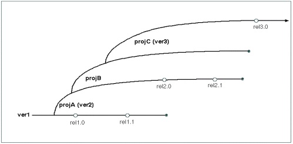

The Challenges of Reproducibility and Control
Mark Kampe
1. Introduction
Based on your experience thus far, it is easy to assume that the
major problems in software development are figuring out what changes
need to be made, making them correctly, and testing that they work.
It might, therefore, surprise you to learn how much time and effort
is spent (in larger projects) on processes that are intended to
restrict changes.
The discipline of managing change in software projects is commonly called
Software Configuration Management (SCM). The capabilities
it provides are generally summed up under the two terms
reproducibility and control.
- Reproducibility is the ability to recreate,
at any time,
an exact copy of a program (or other work product) as it
was at any point in its history. There are many reasons
why we might need to do this:
- to reproduce an older (shipped long ago) version of
a program to verify or fix a bug.
- to understand exactly which changes were made when,
and for what reasons in the past.
- to enable us to back-out a change that turns out to
have been bad.
- Control refers to the ability to control
who, is allowed to make what kinds of changes, to which
versions, of which work products, at which times. This
might be important to:
- detect or manage different developers making
conflicting changes to the same, or related, modules.
- ensure that sensitive modules are only updated by
(or with the approval of) designated experts.
- stabilize (reduce the changes being made to) a
program that is about to be released.
The primary activities and tools of Software Configuration Management
fall into the categories of:
- version control
- build automation
- build environment
- change control
The following sections introduce the motivations, capabilities,
tools and techniques in each of these categories. Other readings
will expand on these subjects, providing more in-depth discussions
of issues and practices.
2. Version Control
Imagine that you are the developer responsible for a popular utility.
The latest released version is 3.1, and you are already working on
features that will go into version 3.2. You just got a call from
support that a key customer has encountered a serious bug ... in a
three year old version (2.5).
- You have fixed hundreds of bugs in the last few years,
probably including this one, so your first inclination
is to tell them to get version 3.1 and see if the problem
still happens there. Support immediately tells you that
is not an option:
- The customer is also running a four year old
operating system, and version 3.1 would require
them to upgrade to the next version of the OS,
which it turns out won't run on their hardware.
- There have been many enhancements made to your
utility in the last few years, and it would not
be trivial for existing users to just move over
to the new version.
- The customer has been cognizant of these issues,
and that is why they are paying for a legacy
support contract, which obligates us to maintain
and fix bugs in the version that we originally
sold them (version 2.5).
This is actually a fairly common problem. Customers
buy a product for the hardware and operating system
they have at the time, and they continue to use it
for many years. Upgrading the hardware and software
are likely to be both expensive and disruptive, so
they purchase long term support contracts that obligate
us to fix critical bugs in this old (legacy) software
for many (e.g. five) years.
- You can probably find a test machine, and install an old
OS on it, and then go find a copy of release 2.5 of your
software and install that, and then you can try to reproduce
the bug. If you can reproduce the problem, and fixing it
requires an update to the software, you will have to:
- get the sources to your utility,
as they were three years ago.
- update those sources to fix the bug, and then build
an updated version of the 2.5 product with the new
bug fix.
- re-run all of the old (release 2.5) test suite to
ensure that you did not break anything.
- add new test cases to the old (release 2.5) test suite
to confirm that the reported bug no longer happens.
- prepare an update (patch) to release 2.5 that contains
the new bug fix.
- Then, if it turns out that the same bug is actually still present
in the current code-base, you will have to repeat all of those
operations in the current (3.2) code base.
This (typical) story is just one illustration of why software projects need
version control tools. There are a myriad of situations that require us
to be able to go back to previous versions of the code, whether to
- investigate problems old versions
- study the detailed history of the code in order to
understand how it got to be the way it is.
- back-out changes that no longer make sense.
2.1 Capabilities of a Version Control System
A version control system is a sort of database. It may be as simple as
an archival system for named object versions, a tool for tracking
changes to text files, or it may actually be implemented on top of
a relational database. It may be capable of handling only textual
data (e.g. SCCS, CVS) or it may be capable of arbitrary files
(e.g. svn). There are, however, a few basic capabilities that
almost all version control systems have in common:
Any Version can be Recovered at Any Time
Given a change transaction ID, it is possible to recover, at any time,
the affected file, as it was at the time that change was made. This
is the primary capability of any version control system.
All Changes are Tracked
Whenever any change is made to any object, a record is made of:
- a unique change transaction ID
- the time and date when the change was made
- the human being who ordered the change
- a textual explanation for the change
This
- gives us a handle on every change.
- helps us understand (after the fact) why each change was made.
- tells us who to talk to if we need more information about
the change.
- enables us to prepare reports of all of the changes that
have been made or incorporated into a product.
Extracted Objects can be Versioned
If we have the ability to reconstruct any file as it was at any point
in time, how can we tell what version of a file we are looking at now?
Just as some copiers and fax machines have the ability to automatically
label every output page with information about when it was printed,
most version control systems have a means of automatically putting
identification information into every extracted file.
Most of these mechanisms involve some sort of macro expansion capability,
where:
- uses of specialized macros or keywords are placed in the file
before it is checked in to the version control system.
- whenever a file is checked-out of the version control system,
the macros are expanded with version specific information
(e.g. file name, version number, when the last change was
made, when the file was extracted, who made the last change,
etc).
In this way, the creator of a file can ensure that every extracted
instance of the file will be appropriately labeled.
This capability is so important that I have known several executives
who will not read any proposal or specification that does not contain
such version labels:
- because these labels mean the document is under version control.
- because these labels make it possible to confirm (when talking
to someone else) that we are indeed talking about the same version.
Versioned Objects Exist in Multiple Branches
It is tempting to think that a file experiences a pure linear sequence
of updates, each new change an improvement on the last. As the example
at the beginning of this section illustrated, that is an overly simplistic
model. There are a few reasons for files to exist in parallel branches:
- The product exists in a succession of releases, but it may
occasionally be necessary to make changes to old release
(rather than simply moving up to the newest version). Legacy
support problems are the most obvious examples.
- Multiple people need to make large sets of independent
changes to a product in parallel. They might decide to
do their work in distinct branches, and then re-merge
them when they are done.
- The product may run on multiple platforms (e.g. Windows
and Linux), and even though there is much common code, the
two platforms require distinct versions.
Branches are merely parallel threads of development, and can be
created for any purpose. There are, however, two common branching
strategies:
- In the mainline model, the main (default)
branch is the latest-greatest. When ever a release is
made, we capture a snapshot as of the time of that release
in a branch. In this model, the only changes in branches
are patches to old versions. All new development happens
in the mainline.
The Mainline Model

- In the promotion model, the main (default)
branch is the first version. When a new release is to be
worked on, we create a new branch. And when another new
release is started we create a branch from that branch.
This model more clearly shows the history of the code
(kind of like a family tree).
The Promotion Model

These models may not, however, be as quite as different as they seem.
In the promotion model, each subsequent release obviously benefits from
work done in the previous releases. Omitted from the (over-simplified)
mainline diagram is the ongoing feed-back of enhancments from each release
and project back into the main branch.
They may support distinct, hierarchically related, work-spaces
With a very large product, there may be dozens or even hundreds of
different sets of developers working on parts of the same system.
If everyone were working in a single work space (where everyone saw
everyone else's changes) there might be many situations where a mistake
made by one group, could block all of the other groups. For this
reason it is desirable to be able to create temporary copies of a
version control database, where I am free to make all of the changes
that I want (and have them tracked), but other people will not see
those changes until I am done.
This is typically done by creating a child or clone of the original
workspace.
- Within my workspace, I can do what ever I want, but my
changes only affect my own work space. Nobody else sees
what I am doing.
- I can, at any time, check for updates in my parent workspace,
and replicate those changes in my own. This keeps me up to date
with respect to (final) changes being made by other people.
- When I am done, I can put back all of my changes (as a single
huge transaction) to my parent workspace. Only then will other
users of the parent workspace see my changes. This will also
allow other children of the same workspace to be notified of
my updates.
- When a change in my parent workspace updates a file that I too
have changed, I have to merge the changes to resolve the
conflict. Most version control systems include tools to detect
such conflicts facilitate their reconciliation.
Systems of parent and child workspaces can exist in very complex
hierarchies. There might be an official release version,
which has a child for the current release candidate, which
has children for each development organization, each of which
has children for each distinct group of developers.
2.2 Use of a Version Control System
A version control system is much like a database. It may actually be built
on top of a database. They are also organized into repositories (projects,
directories, etc). The basic usage cycle is pretty simple:
- It may be necessary to register yourself with a particular
repository (which may verify your ability to read or write
these files).
- When documents are created (or first imported into the version
control system) a command is run to add each file to the
repository.
It is a good idea to ensure that each file contains the
appropriate version ID/macro/strings to ensure that every
copy extracted from the repository will contain appropriate
version identification information.
- When you want to look at (or work on) files, there is usually
a simple command to extract current (or any specified versions)
of all (or any subset) of the files in the repository. These
become your working copies.
- You can view, edit, and delete these using any tools you choose.
- There are usually commands to audit your collection of files
against the repository, and tell you (a) what files you have
changed and (b) what other changes have been made to the
repository in the interim.
- There are usually commands to help you identify and reconcile
potentially conflicting updates.
- There is a command that checks your changes in to the repository.
It may ask you for a list of files to be checked in, or it
may detect them automatically.
It will probably ask you to provide a summary of these changes
(why they have been made and what they accomplish).
- There are commands to view the change history for
selected files.
- There is also usually some way of backing out a change
that proves to be undesirable.
Version control systems are normally used to keep track of created
documents (like requirements, specifications, plans, software,
test cases, user manuals, etc).
Newer version control systems are capable of handling non-textural
data, and may also be used to archive copies of generated objects
(program binaries, databases, trace logs, test plan results, etc).
2.3 Distributed Version Control
The preceding discussion has been biased towards centralized
version control, where there is an official master repository and a definitive
lineage for any branch. This is the most common model for most commercial
and personal software projects. It is not the only model.
Consider an
open source product under active development by many people to support a
wide range of needs ... Linux for example.
Numerous people are working on their own versions, and regularly fix
bugs and add features. Not all valuable changes are (or should be)
accepted into Linus' main branch, and it may take many months for
particular change to find its way into the main branch. People who need
an update are not willing to wait until that change (perhaps) appears
in the main branch. Rather, these changes (patches) are continuously
passed around the Linux community (like cookie recipes).
In a centralized version control system version one might:
- start with version 1.3.2
- delete a few lines
- add a few lines
- add a description of what we did and why
- check the updated version back in as version 1.3.3
If I wanted these changes, I would check out the new version.
In a distributed version system we might start with the same version,
make the same changes, and commit them back with the same comments.
The difference is I would get these changes into my own source tree.
- look at the changed branch, and find the commit that included the desired changes.
- apply those same changes to my own branch.
- check the updated version back in
The trick is that middle step. If my code was identical to the creator's version
1.3.2, applying the same changes would be trivial. If my code has greatly diverged
from the creator's version, that process might be quite complex ... but that is the
price I pay for:
- wanting to have my own variant version of the product.
- wanting to take advantage of other peoples' ongoing work.
In centralized version control, the sacred operation is commit,
and most of the complexity surrounds the creation and maintenance of branches. In
distributed version control, commits are a dime a dozen. The interesting
operations are merge or rebase (consider this change
to be relative to a different starting point). To support these operations,
distributed version control systems tend to have sophisticated tools for assisting
developers with the process of merging patches into divergent branches:
- tools that understand the language well enough to determine
whether not changes are likely to conflict.
- tools that will automatically merge non-conflicting changes,
and create appropriately tagged/bracketed blocks of code to
represent the alternatives for potentially conflicting changes.
- side-by-side comparison tools that make it easy to see (in
context) what the real differences are.
- tools that automatically do the entailed edits after a
user decides what the correct solution is.
Note, however, that the problem of code merging is not at all unique to
distributed version control:
- a developer working in a child of the master tree may have to
merge her updates with recent changes in the master tree.
- a developer working in branch B may need a change that has just
been made in branch A, but that cannot reasonably be passed
through the main trunk.
Although distributed version control arose to support different development
paradigms, many people feel that distributed version control tools are simply
more general/powerful and use them to manage more tradtitional main-trunk
development.
3. Build Automation
As programmers, we it might be natural to think of programs as
things that human beings create in text editors ... but this is
only the first step in its creation. Our source files will be run
through a several passes of compilers, library builders, linkage
editors, database builders, packagers, and other such tools before
our software is ready to run. It is important that this
build process be automated. There are several
reasons for this:
- to enure that all of the steps are performed,
and in the right order.
- to ensure that each step is done properly
(with all the right options, no typos).
- to relieve people of the responsibility for
remembering and correctly entering complex
sequences of commands.
- to eliminate possible variations in the created
software associated with who did the build.
- to permit long builds to be performed automatically,
without human supervision.
There is also a reproducibility goal associated with build automation:
The results of a build (the bits created) should be strictly
determined by the source files, and should not be affected by
who initiated the build, when, where or how.
Build automation might involve anything from shell or perl scripts,
to macro-processors, to make files, to auto-makefiles, to integrated
development environments. Their capabilities might be any combination of:
- a simple set of scripts that run the required commands,
and stores the output in a log for later inspection.
- scripts that run the required commands and
check to ensure that each step completes successfully
before moving on to the next. This can save a great
deal of time and ensure that problems are quickly addressed.
- scripts that involve run-time substitutable parameters to
select build options, specify where sources live, etc.
- smart build mechanisms that understand the dependencies
of output files on input files and only do incremental
rebuilds of those
files whose inputs have changed. This can greatly
accelerate builds in a development environment where
people typically make very few changes between successive
builds.
- higher level languages in which it is possible to describe
abstract relationships among files and general rules,
which the tool will then use to determine the class of
every single file, and how to properly build it
(without the need to code specific commands for every file).
The more complex the software to be built, the more valuable
the extra capabilities become. A good build automation mechanism
is one that is:
- completely automated
- easy to use
- robust in the face of errors
- yields highly predictable and dependable results
4. Build Environment
Consider the reproducibility goal we stated for build procedures:
The results of a build (the bits created) should be strictly
determined by the source files, and should not be affected by
who initiated the build, when, where or how.
This may not be strictly achievable ... because the bits created by
the compilation process are not uniquely determined by the source code
and the compilation options:
- different include file may have different type and macro
definitions.
- different versions of the compiler may produce different code
for the same input.
- different libraries may contain different routines, or different
code for the same routines.
- different versions of a linkage editor may combine object
modules differently.
A version control system may be able to ensure that we can reconstruct
the original versions of our source modules. If we want to be able to
reliably reconstruct the same binaries, it we may also need to be able
to reassemble the same versions of all of the build tools that were
originally used to build the software.
This is not merely an issue for legacy system support. Imagine what
would happen if different developers and the release engineering group
were all using different versions of the compilers and libraries. If
there was a bug in a library module, two different developers could
compile the same source and get different behavior.
To avoid such problems, many software projects settle on a
standard build environment. A set of basic
tools that will always be used to build a particular release of
the product. What if there is a bug in one of the tools in the
standard build environment? It can be fixed, but then a new
version of the standard build environment has to be defined, and
everybody must upgrade to the new version.
Many organizations are (quite rightly) paranoid about the possibility
of different people in the development using different versions of the
build environment. It is common for organizations that are concerned
about build correctness and reproducibility to adopt some very
conservative practices:
- have a formal build group that maintains systems with a
standard build environment.
- always build from the top-of tree (in the version control
system).
- always build using totally automated build procedures.
- run your tests against the binaries from the official build.
- ship only binaries from the official build.
So how does one get a copy of the standard build environment?
- some groups actually check the build tool (binaries) into
the version control system. This is slow and inefficient,
but it is very well controlled.
- some organizations maintain build machines that have the
standard build environment on them, and can be used by
anyone who needs to do a build.
- often, the build group will maintain a web-site with packages
for standard build tools. Anyone who wants to set up a build
environment can simply download and install those packages.
packages
- it is increasingly common to do builds in virtual machines,
which are cloned from golden images, maintained by the
release engineering group.
In situations where developers might reasonably be expected to build
many different versions of the same software, it is common to install
each version of the build environment into a different directory,
and to use environment variables to tell the standard build tools
where they can find the correct tools.
5. Change Control
There are reasons to limit peoples abilities to make changes:
- When one developer is making changes to a module, it may make
sense to lock it, as a warning to others that these changes
are in progress.
- There may be a notification mechanism to ensure that
interested developers are automatically informed whenever
changes are made to specified modules.
- There may be a formal process associated with changes to
some components:
- requirements may have a contractually mandated change
procedure, involving multi-party sign-offs.
- we may want to ensure that changes to critical or
(particularly delicate modules) are only made by
a designated expert, or at least reviewed by one
before they are checked-in.
- there may be a process check associated with changes
that go into a release, to ensure that all of the
required testing and documentation have been
completed and that this software has indeed been
approved for release. Such checks are often referred
to as Gate Keeping.
- Any change has the potential to introduce new problems, and
so it is common, as a product approaches release, to prohibit
any changes except for fixes to a few designated critical bugs.
This is called a product stabilization period.
5.1 Capabilities of Change Control Systems
It is possible to implement change control disciplines with purely
administrative procedures (written rules about who is allowed to
do what when). Many version control systems, however, include
mechanisms to ensure the enforcement of change control policies:
- It may be possible to designate which users have read and
write access to which files. The access control may be
very coarse (at the repository level) or quite fine (at
the individual file level).
- It is usually possible to designate lists of users who are
to receive e-mail when files are updated. These may be
managed as mailing lists associated with files or sub-trees,
or as per-user rules to describe the changes in which they
are interested.
- There may be a means of locking a file, to prevent other users
from changing it, or to at least notify them that changes are
currently in progress. If files can be locked, there is also
usually a means of breaking expired locks.
- If the version control system supports branches, it will be
possible to imposed different access control rules on different
branches.
- If the version control system supports related work-spaces,
it will be possible to impose different access control rules
on each work-space, and on the migration of files between
them.
6. Conclusions
Software Configuration Management procedures make it possible for
us to know precisely what our product is (all of the components
that went in to it, and the exact means by which they were
processed to yield the final product. They also make it possible
for us to exactly reproduce any version of the product that has
ever existed. These capabilities are often critical for major
software products.
But what of less formal development situations (e.g. a little
utility I write for myself)? The requirement for total reproducibility
would seem to be gross overkill.
This is true, but ...
- We still probably want to use a version control system to
keep track of our changes, so that we can ...
- go back and understand how a piece of code got
to be the way it is.
- back out a series of changes that turn out to have
been bad.
- enable us to maintain multiple parallel versions
or releases of single files.
- We will still want to automate our software construction
process ...
- to ensure that our software is correctly built
every time.
- to save us the trouble of remembering and typing
complex series of commands.
- to enable people to build the software who do
not actually understand all the details of its
design and construction.
- to quickly integrate a few changes, rebuilding
only the components that actually changed.
- We will still need to define the platforms on which our
software is to be built and run ...
- to prevent problems resulting from attempting to
run the software on the wrong platform.
- to avoid bugs resulting from the building of the
software with the wrong versions of tools.
Larger projects may impose more formal constraints on the development
process, and more completely specify the ways in which various tasks
should be performed, but the basic techniques of Software Configuration
Management are applicable to even the simplest of software projects.
Most modern SCM tools are flexible enough to support the full
spectrum of software development projects. An understanding of these
issues, tools and techniques will prepare you to create a
Software Configuration Management regime to meet the needs of each
project you work on.